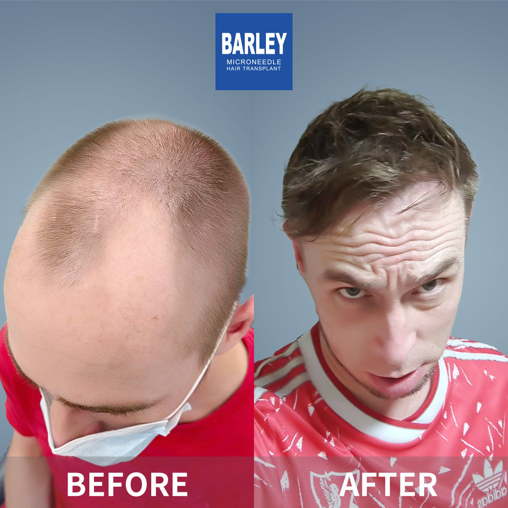
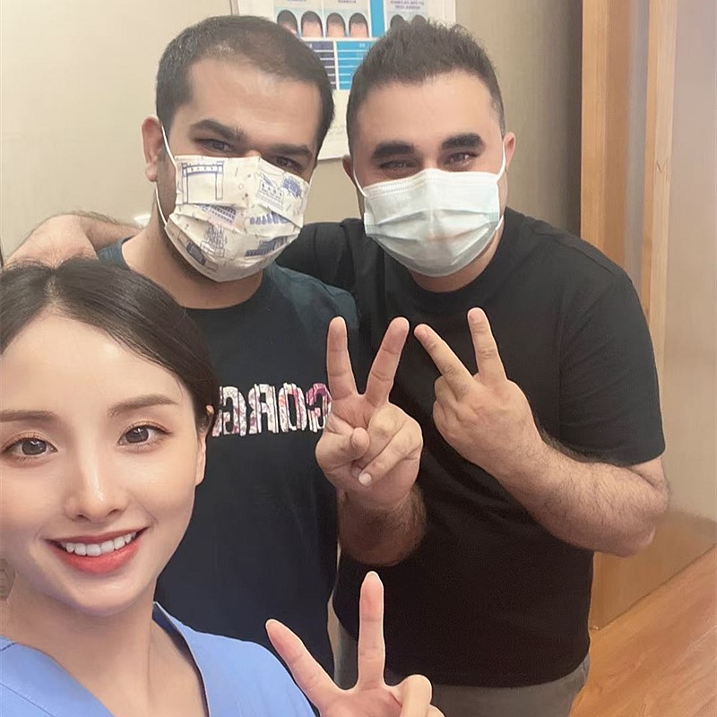
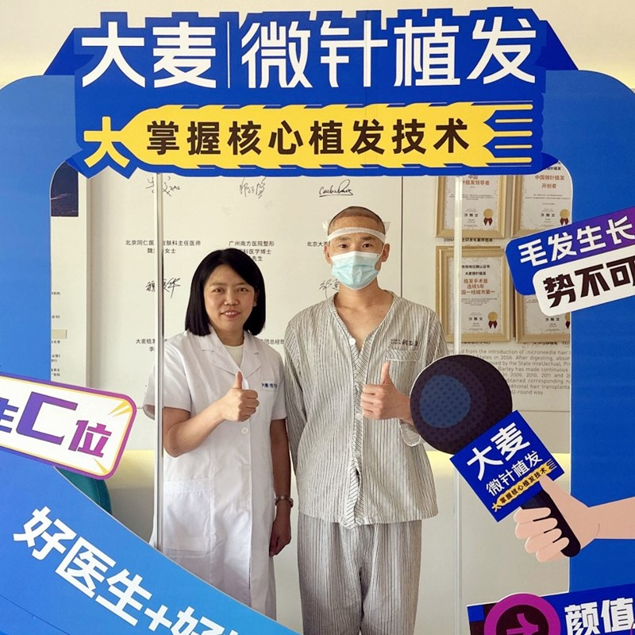
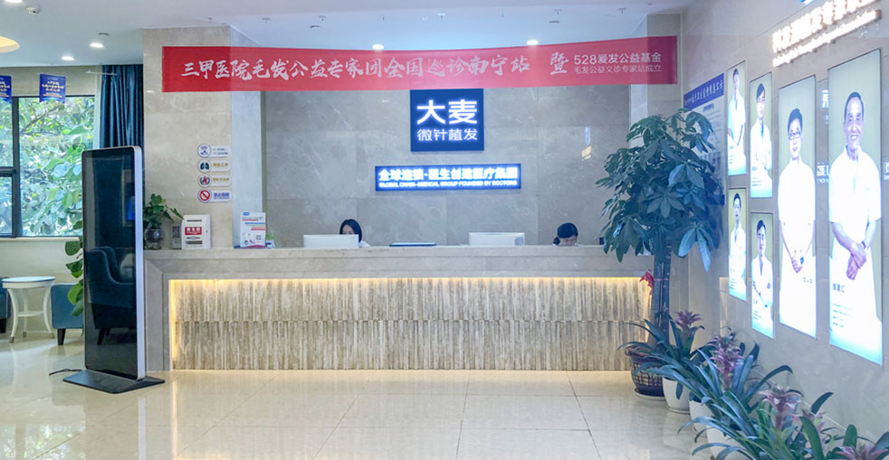

Your journey to world-class hair restoration begins here
Barley Microneedle Hair Transplant Hospitals can be found in 31 cities across China, making our award-winning services accessible to everyone. We ensure that our high-quality hair transplant services are available no matter where you are.
We not only have convenient locations in all major cities throughout China, but we also warmly welcome clients from all over the world. Whether you're traveling from Europe, Asia, the Americas, or anywhere else, our international patient team is ready to assist you.
With 31 branches in different cities, you can select any location nearest to your home country or travel destination.

Clinics Across China
Countries Served
Happy Patients
With 31 branches across China, there's always a Barley hospital near you
Our extensive network of clinics spans across all major Chinese cities, including Beijing, Shanghai, Guangzhou, Shenzhen, Chengdu, and many more. Each branch maintains the same high standards of care, equipment, and expertise that Barley is known for.
No matter which location you choose, you'll receive the same exceptional treatment from our experienced medical team. All clinics are equipped with state-of-the-art facilities and follow strict international hygiene protocols.
Our team will help you choose the most convenient location
We handle every detail so you can focus on your transformation
If you need help obtaining a visa, Barley can assist you. We provide official invitation letters for visa applications. We begin this process after you book your procedure to make your visit as smooth and easy as possible.
Our English-speaking staff makes information and consultation simple and accessible to all international clients. Translation services are available throughout your procedure and stay at our hospital.
We provide complimentary airport pickup and can arrange comfortable hotel accommodations near your chosen clinic. Our team ensures your arrival and departure are hassle-free.
To make your visit memorable, we can help plan site visits and trips around the city you're visiting. We're committed to making your stay in China memorable and life-changing.
Experience the difference with China's leading hair restoration hospital
Our proprietary microneedle implant pen technology ensures natural-looking results with minimal discomfort.
Our surgeons have decades of experience and specialize in the latest hair transplant methods.
From consultation to post-transplant care, we provide complete support throughout your journey.
Get world-class hair restoration at 50-70% less than Western prices without compromising quality.
Visit Barley with confidence knowing you'll be treated with the utmost care. Our staff and hair transplant experts will make your visit worthwhile.
Start Your Journey TodaySee the outstanding hair restoration results our patients have achieved




Authentic moments with our happy, successful patients

Celebrating their amazing results with our care team

Patient proudly showing off their fantastic new hairline
Joyful patient sharing their fantastic experience

Patient celebrating with our expert medical team

Thankful patient following their successful transplant

Thrilled patient showcasing their hair restoration results

Patient overjoyed with their transformation results

Happy patient eager to begin their new chapter
Genuine stories from our grateful patients around the world
"I was nervous about traveling to China for a hair transplant, but Barley made the entire journey effortless. From the airport pickup to the post-op follow-ups, everything was meticulously organized. Six months in, my hairline looks completely natural — my own family barely noticed the change!"
"After losing my confidence for over a decade, I finally decided to take the plunge. The consultation video call put all my worries to rest — the surgeon explained everything clearly and gave me realistic expectations. Now I'm nine months post-op and I honestly can't stop smiling every time I look in the mirror."
"The value for money is absolutely incredible. Back in Sydney, I was quoted nearly triple the price for a similar procedure. At Barley, the quality exceeded what I expected at any price point. The clinic was spotless, the staff incredibly warm, and my results speak for themselves."
"As someone who researched clinics for nearly two years, I can say Barley stands above the rest. The 30+ clinic network across China gives you confidence in their scale and reputation. My coordinator spoke perfect English and was available on WhatsApp at all hours. Truly world-class service."
"I had my procedure done at the Shanghai clinic and the experience was seamless. The hotel they arranged was just a ten-minute walk away, the driver picked me up right on time, and the medical team made me feel completely comfortable throughout. Recovery was much faster than I anticipated."
"My wife actually found Barley online and encouraged me to book a consultation. Best decision I ever made. The entire team treated me like family, the procedure day was surprisingly relaxing, and a year later the grafts have grown in beautifully. I feel like myself again."
Experience our modern and comfortable facilities

Our state-of-the-art facility

Relax in our premium lounge

Sterile and advanced

Private and professional

Comfortable post-op space

Welcoming entrance
Everything you need to know before your hair transplant journey to China
Click to copy contact information
15810155700
+86 13730143529
hairtransplant@qq.com

Everyone's hair loss journey and solution are unique due to a variety of factors. Our hair restoration experts will assist you in determining the root cause and the best solution for your hair restoration plan. If you have any questions, please ask; we are happy to assist.